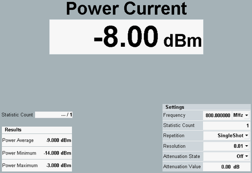

Measurement Results
The external power sensor measurement dialog shows all results. For a detailed description, see "Measurement Results".

External power sensor measurement results
- "Statistic Count" and power results:
Statistical evaluation of the sensor power results at the selected frequency.
SCPI command:FETCh: GPRF: MEAS<i>: EPSensor? etc. - "Settings" area:
Overview of the essential current settings of the external power sensor measurement.
See also: "Statistical Results"